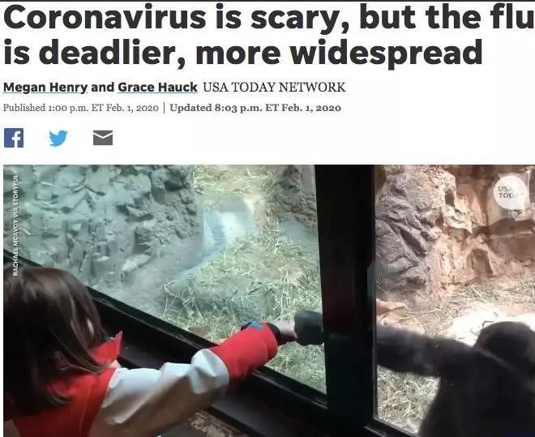
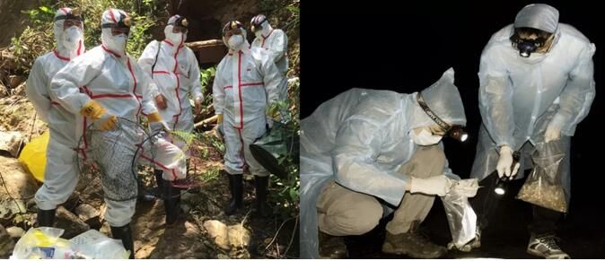

新冠疫情蔓延六大洲，世卫密切监测新进展
原文链接 备份链接 目前包括中国大陆在内，全球已经有41个国家和地区出现了疫情，其中，韩国是中国大陆之外疫情蔓延最快的国家。 尽管如此，世卫组织不希望在“没有谨慎和清晰地分析事实情况之前”仓促宣布疫情为全球“大流行病” 文 |《财经》特派 …
以下文章来源于我们来补课 ，作者寒潭清
[
我们来补课
成人版十万个为什么，重拾你对世界的好奇心](#)

病毒在地球上存在了数十亿年，早已构成生态系统不可或缺的一部分，想彻底消灭病毒比消灭全部虫子更不现实，此次新冠肺炎疫情绝不是人类和病毒的最后一场战斗。
事实上随着斗争经验的丰富，人类面对病毒已不像从前那样无从下手，但在疫情消失后精神上懈怠却为此次疫情中的手忙脚乱埋下伏笔。例如在十几年前的SARS中，总结出了诸多宝贵经验，可惜并未全部被有效落实。
此次疫情暴露了哪些漏洞？我们又该如何弥补呢？

基层要有发现疫情的哨兵
固然，面对病毒没有特效药，但如果能早发现疫情，控制传染，对感染者隔离治疗，常常能将疫情消灭在萌芽状态。这方面做得比较好的是日本，日本通过分级诊疗制度，使预防监测直达“末梢”。
在日本生病了，人们通常会到各个专科诊所就诊。如果诊所的医生认为患者的病情需要到综合医院诊断，才会为患者开具介绍信，并为患者预约。
这种做法有很多好处。
一方面散布全国的专科诊所构成一个个“神经末梢”，深深地扎根社会，能迅速发现出现的疫情并第一时间上报，相关主管部门根据病例数变动来监测疫情的流行趋势，并向社会发布传染病风险以及相关防护措施。
另一方面，这种设置大大缓解了综合医院的压力，既能让民众及时就医，同时优化了资源的配置，又?让具有优质医疗资源的综合医院可以全力救治危重患者。也正因此，这些医院基本上没有人头攒动排长队的现象，也就降低了在疫情发生时由于人群密集而出现交叉感染的概率。
但是这种分散式的医疗体系对医生的专业素质和医院的管理能力有着极高的要求。
除了医疗，日本各地还设有专门的“保健所”，负责传染病的预防。保健所定期深入居民区、学校等地普及传染病防疫知识，从儿童抓起，帮助居民养成良好的生活卫生习惯。
目前大部分国家存在的问题是，在公共卫生上的投入不足，导致传染病前期预防工作不到位，反而给后续的治疗工作带来巨大压力。不少防疫体系比较完善的发达国家，虽然对新冠疫情发现得早，但是在处理上不及时，抱有侥幸心理，导致疫情扩散。
信息沟通要顺畅
应对疫情，全国是一盘棋，只有信息沟通顺畅，才能最大效率地集中全社会力量来战胜敌人。
很多国家的卫生、环境、食品等部门、各政府之间信息不流通，带来的问题就是发现异常情况不及时，总有地方慢半拍，对疫源的研究也处于碎片化、低水平重复的困境中，这白白浪费了早期的先机。
美国建立了一套相对健全的传染病报告系统，能实现早期疫情的共享。疫情信息不仅有自下而上的报送，各个专业部门之间也有共享。
此外医卫专业人员之间也有信息渠道，如2000年建立的Epi-X，拥有来自美疾控中心、各地卫生部和公卫机构的约6000个用户，该平台在公共卫生事件中给每个独立的医疗专业人员提供了一个快速报告和专业交流的平台。
防疫和经济缺一不可
2009年猪流感横行世界，当年6月底，美国的病例数比排名第二、第三的墨西哥、加拿大加起来还多，但美国却比较“淡定”。原因在于根据动物实验和对人群的观察发现，这次的猪流感和以前的流感有根本差别：传播慢，病死率也不高。因此美国没有选择倾全国之力去对付一个相对来说威胁不大的猪流感。
今日美国（USA Today）以《新型冠状病毒可怕，但流感更致命，传播范围更广》为题发文，指出“比新型冠状病毒更危险的是已经影响百万美国人的流感”
▼

美国的这一决策也是因为有过“前车之鉴”。
1976年，美国在没有彻底弄清楚情况的时候便为4200万人接种了疫苗，最后猪流感没来，反而因为疫苗的副作用死了30多人，带来了3917起向政府索赔的官司，总金额高达35亿美元，猪流感疫苗的全民接种也成为美国20世纪最大的公共卫生决策失误之一。
这也是有些国家对疫情进行“佛系”处理的根本原因，尤其是经济对外部依赖程度高的，比起病毒，他们更害怕巨大的经济损失。但是疫情的发展不以人的意志为转移，目前的问题是，早先抱有侥幸心理的国家疫情开始扩散，反而需要付出更高的成本进行控制。
防疫功夫在平时
等到疫情来临时再行动是绝对来不及的，只有平时功夫到家，面对危机才能从容不迫。
得益于现代医学的进步和防疫体系的发展，很多传染病在萌芽期就被消灭了。那为什么SARS过去十几年了，科学家还要跑遍全国、深入蝙蝠洞去寻找病毒源头？因为获取了病毒的数据，当再次遇到类似的疫情时，就不至于两眼一抹黑。
传染病防疫确实是个吃力不讨好的活，不仅要长期“坐冷板凳”，平时还很难见到显眼的成绩，于是常常被人们忽略。毕竟在没有疫情发生时，跑到深山老林的蝙蝠洞里研究粪便看上去似乎有些“愚蠢”。可一旦发生疫情，恰恰是这些平时不起眼的人和他们坚持做的工作，构成了对抗病毒的最后一道防线。
科学家们跋山涉水，在蝙蝠洞中进行研究
▼


图片来源：“一席”公众号
当然，我国在传染病防疫研究上的投入还有待提高。2003年的SARS，2015年的埃博拉，2017年的禽流感以及这次的新冠，病毒都是BSL-3级别病原体，需要高安全等级的医学实验室才能进行研究。美国所有高水平大学的医学院和医院都基本配备BSL-3实验室，方便迅速从临床上分离危险的病原体以及后续基础研究的展开。
中国目前高校中建有能够从事非兽类病原研究的BSL-3实验室只有武汉大学、浙江大学、中山大学、复旦大学和中国医科大学5家，规模和对外交流合作范围都极为有限，很难无法满足科研需要。
此外，公共卫生人才也较为缺乏。中国疾控中心只有约2100名员工，也缺乏具有医学、公卫、信息学、法律等多重背景的复合型人才。
物资储备尤为重要
保障充足的医疗物资同样重要。物资缺乏不仅无法满足防控需求，对一线医护人员的生命安全也会带来巨大隐患。
以新加坡为例，在SARS疫情中，问卷调查显示，与巨大的工作压力相比，医护人员更担心自己患病、或是无意中将疾病传播给家人、朋友和同事。
新加坡的卫生机构不仅提供了充足的防护设备如防护服、手套、护目镜等，并且非常注重保障这些装备的质量，提供了相应的个人防护培训，大大增强了医护人员的信心。
美国为应对自然和人为灾害也建立起了一个应急救援体系—美国国家战略储备（SNS）。
美国的政府与专家合作，结合当前国情和医疗现状确定物资的储备范围，除了基本的口罩防护服等个人设备，还包括抗生素、药品、便携式急救医疗设备等等，储备范围十分全面，并且会根据专业部门的研究不断更新储备品种，保证能适应应急需要。
此外，美国专门设计了一种速达应急包，每件应急包重50吨，由130个标准货箱组成，12小时内能迅速部署到事发地点。它们分别储存在美国国内几个临近主要交通枢纽的秘密战略点，由世界一流的商业运输伙伴负责递送。一件应急包内的物资足够数十万人维持十天的治疗和预防。
再者，由于医疗物资存在有效期，大量储备对财政也会造成一定负担，美国在政府储备的同时也和企业进行合作。对市场可供应的，政府和企业签订合同，保证紧急情况下可以直接送达，通过利用供应商的现有仓储和供应网络，减少了政府的管理支出。
但即便美国已做了不少准备，面对来势汹汹的疫情也面临物资缺乏的窘境。这时，完备的制造体系和强大的供应链就显得尤为重要。
新冠疫情终究会结束，但在我们欣赏明媚春光的时候，不能“好了伤疤忘了疼”。由于很长时间没有发生世界性的大流行病，各国普遍有所懈怠，在疫情中暴露出了诸多漏洞。
病毒对人类的威胁可能会永远存在，在彻底破解它的奥秘之前，守住人类阵地的唯一办法便是在平时加大对公共卫生系统的投入，建立一个高效的卫生监测、反应系统，这是给所有人购买的一份保险。
策划：中经补课委员会
文案：寒潭清
校对：翟军


推荐阅读

点击大图 |油价暴跌，世界经济的临界点来了？

点击大图 |水比油贵！石油“三国杀”致油价暴跌30%…国内油价再现“5元时代”？

原文链接 备份链接 目前包括中国大陆在内，全球已经有41个国家和地区出现了疫情，其中，韩国是中国大陆之外疫情蔓延最快的国家。 尽管如此，世卫组织不希望在“没有谨慎和清晰地分析事实情况之前”仓促宣布疫情为全球“大流行病” 文 |《财经》特派 …
原文链接 备份链接 由于缺乏疫苗等应对措施和其他未知因素的存在，专家们仍认为疫情对美国构成风险 *文 | 《巴伦》撰稿人列什玛·卡帕迪亚* *编辑 | 郭力群* 虽然投资者对于新冠病毒疫情造成的后果的担忧正在减弱，但一些顶尖医学专家警告 …
原文链接 备份链接 文｜《财经》特派记者 金焱 发自华盛顿 编辑｜苏琦 一个月前的世界是另一个样子。 2月9日的美国和英语世界，大多数人不知道什么叫“冠状肺炎”——这是有据可查的。花旗集团前全球外汇主管杰弗瑞·杨（Jeffrey …
原文链接 备份链接 文 |《巴伦周刊》中国撰稿人 郭力群 编辑 | 康娟 新冠肺炎疫情爆发后，中国部分经济活动一度陷入停滞，这一点从近期公布的经济数据中就能看出。中国海关总署3月7日发布的数据显示，今年前两个月，中国进出口总值5919.9 …
原文链接 备份链接 文 |《财经》特派记者 金焱 发自华盛顿 编辑 | 苏琦 2020年3月6日，我打算给自己放一天的假。 算起来自从武汉疫情暴发，我在1月21采写了第一篇文章《美确诊首例新型病毒病例，或成全球性公共卫生危机事件信号》 …